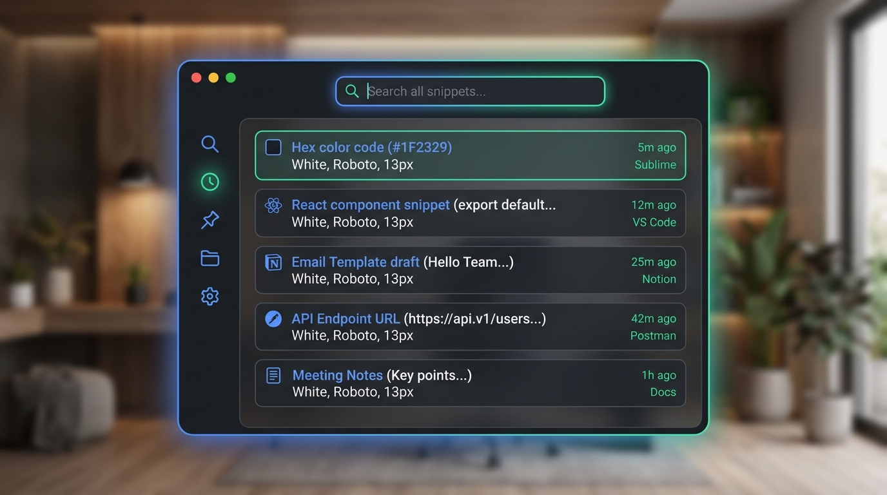
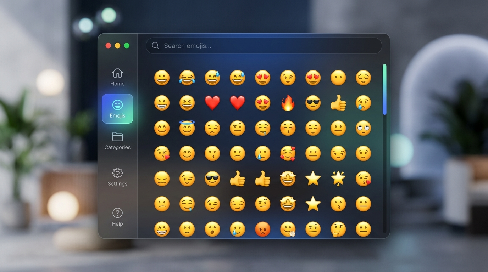

Your clipboard & expressions.
One shortcut away.
A local-first, system-integrated clipboard history and expression picker designed for Linux desktops.
Stable 1.0.0: native x86-64 and ARM64 AppImage, Debian, RPM, and portable downloads include checksums, provenance, and a no-root installer.

Install without build tools.
The recommended installer detects your architecture, verifies the release checksum, installs below ~/.local, and can restore the previous version if activation fails. No Node.js, npm, root access, or FUSE required.
curl -fLO https://github.com/Sanal-Sivakumar/Lclip/releases/latest/download/install-lclip.sh
chmod +x install-lclip.sh && ./install-lclip.sh
Built for current 64-bit glibc Linux. Automatic paste follows desktop permissions; copy and manual Ctrl+V always remain available.
Quiet, focused desktop utility.
LClip keeps the working surface compact: one search field, a clear mode rail, bounded results, and diagnostics that stay in Settings until needed.
- Clipboard history: The latest 10 copied text values are deduplicated, time-stamped, length-limited, and stored only on this device.
- Fresh-start behavior: Every new Super + . opening returns to History and clears the previous search.
- Desktop-aware window: A dedicated native drag strip and Xwayland compatibility preserve movement on supported Wayland sessions.
Expressions without leaving your work.
A searchable offline library plus optional GIPHY search, designed for keyboard and pointer use.
- Offline catalog: 244 emoji, 60 kaomoji, and 124 symbols are bundled locally with searchable names and categories.
- Clear navigation: Labeled modes cover History, Emoji, Kaomoji, GIFs, and Symbols without hiding routine destinations.
- Fast Keyboard Workflow: Search, arrow navigation, and Enter to paste without lifting a finger.

Privacy & desktop integration first
LClip is not a keylogger. It registers one explicit global chord and keeps clipboard history local and bounded. Automatic paste depends on desktop permissions and an available input bridge (ydotool, wtype, or xdotool); when injection is blocked, the selected value remains safely copied for manual paste.